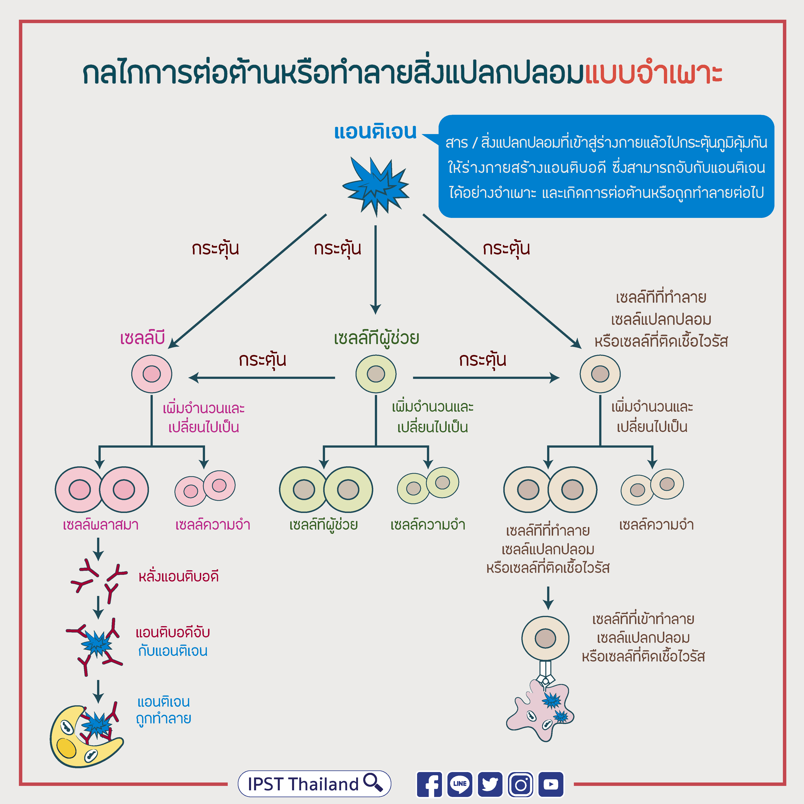

ระบบภูมิคุ้มกันและป้องกันโรค

● ความสำคัญและหน้าที่
- เป็นระบบที่ทำหน้าที่ป้องกันร่างกายจากเชื้อโรคและสิ่งแปลกปลอม เช่น แบคทีเรีย ไวรัส เชื้อรา และปรสิต โดยอาศัยการทำงานร่วมกันของอวัยวะ เซลล์ และสารต่างๆในร่างกาย
● เม็ดเลือดขาว เป็นองค์ประกอบสำคัญของระบบภูมิคุ้มกัน โดยมีหลายชนิดและทำหน้าที่แตกต่างกัน เช่น การจับกินและทำลายเชื้อโรค การสร้างแอนติบอดี และการทำลายเซลล์ที่ติดเชื้อ
● ระบบภูมิคุ้มกันมีทั้ง ภูมิคุ้มกันแบบไม่จำเพาะ ซึ่งเป็นกาาป้องกันทั่วไปของร่างกาย และภูมิคุ้มกันแบบจำเพาะ ซึ่งสามารถจดจำแอนติเจนบางชนิด และตอบสนองต่อสิ่งนั้นได้อย่างเฉพาะเจาะจง
● วัคซีน เป็นวิธีที่ช่วยสร้างภูมิคุ้มกัน โดยกระตุ้นให้ระบบภูมิคุ้มกันเรียนรู้และจดจำเชื้อหรือส่วนประกอบของเชื้อ ทำให้เมื่อร่างกายพบเชื้อในภายหลังจะสามารถตอบสนองได้รวดเร็วและมีประสิทธิภาพมากขึ้น
● การดูแลระบบภูมิคุ้มกัน
- ควรทานอาหารที่มีประโยชน์และหลากหลาย พักผ่อนให้เพียงพอ ออกกำลังกายอย่างเหมาะสม รักษาความสะอาดของร่างกาย และปฏิบัติตามคำแนะนำด้านวัคซีนและการป้องกันโรค